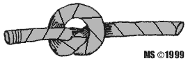
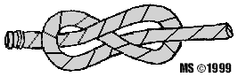
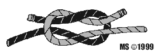
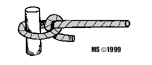

|
|
|
|
|

rodzaje klas wêz³y
zielony |
w tym dziale poznasz wêz³y ktyry ka¿dy niezale¿nie od zainteresowañ powinien znaæ w dalszych lekcjach poznasz bardziej zawansowane STOPERY SUPE£ Jest on stosowany jako stoper, zgrubienie liny, które zabezpiecza przed wysuniêciem siê liny z bloku lub kipy. Czêsto ma zastosowanie na fale miecza lub p³etwy sterowej na jachtach mieczowych. Szereg sup³ów na fale pozwala utrzymaæ miecz lub p³etwê sterow¹ na po¿¹danej g³êbokoœci zanurzenia. Wêze³ ten jednak, gdy jest rzadko rozwi¹zywany i dzia³a na niego du¿e obci¹¿enie, mocno siê zaciska i jest trudny do rozwi¹zania. 
ÓSEMKA Spe³nia funkcje bardzo podobne jak supe³, czyli jako zgrubienie liny zabezpieczaj¹ce przed wysuniêciem siê jej z bloku lub kipy. Wêze³ ten u¿ywany jest szczególnie na koñcach szotów.
ZWIÊZY P£ASKI Znajduje zastosowanie przy ³¹czeniu lin o zbli¿onych œrednicach. Nie nale¿y stosowaæ przy silnym obci¹¿eniu, gdy¿ zaciska siê i jest trudny do rozwi¹zania, niszczy linê. Je¿eli liny s¹ bardzo sztywne lub œliskie (np. zat³uszczone i zmoczone) nie mo¿na mieæ pewnoœci, ¿e nie rozwi¹¿e siê pod du¿ym obci¹¿eniem, zw³aszcza je¿eli jedna z nich jest cieñsza.
CUMOWNICZE PÓ£SZTYK S³u¿y najczêœciej do zabezpieczenia innych wêz³ów u¿ywanych do cumowania. Uwaga - nie nale¿y cumowaæ przy pomocy pó³sztyku. |